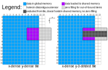
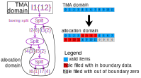
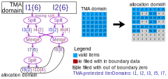
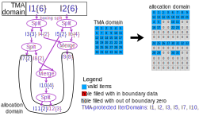
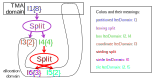
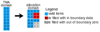

TMA Modeling In Depth
[!NOTE] We use \(\div\) for true division, and \(/\) for Euclidean division. For example, \(5\div 2 = 2.5\), \(5/2=2\).
This document means to provide a deeper insight into how we model TMA, primarily at IterDomain level. This document is not an introduction to our TMA support, which can be found here. This document does not discuss topics like hardware, performance, computer architecture, etc., instead, we focus on mathematical correctness of our modeling here. This document assumes familarity with the introduction doc and “Divisibility of Split”.
We will focus on tiled TMA here, im2col TMA is not supported yet.
What is TMA?
TMA is a hardware feature that allows the GPU to load a tile from a tensor of up to 5D. The tile can be dense, or strided, as shown in Figure 1 below (the same figure as in the introduction doc):

Conceptually, we can consider TMA as a function:
\(\mathrm{tma}(\vec{x}, sa; ga, \vec{gs}, \vec{bs}, \vec{gr}, \vec{er}, op)\).
In the parameter list of the above function signature,
we intentionally used ; instead of , to separate \(sa\) with \(ga\).
we call everything before ; “inputs”, and everything after ; except \(op\) “parameters”.
Also note that, we use column-major when talking about TMA.
The meanings of inputs, parameters, and \(op\) are:
\(op\) defines the direction of transfer, it can be either “load” (global -> shared) or “store” (shared -> global).
\(\vec{x}\) is the N-dimensional coordinate of the starting of the box in tensor. In the example in Figure 1, it is \((8, 4)\).
\(sa\) stands for “Shared memory base Address”. In the example in Figure 1, it is the address of the purple item on the top left cornor of the box in shared memory.
\(ga\) stands for “Global memory base Address”. In the example in Figure 1, it is the address of the blue item on the top left cornor of the tensor in global memory.
\(\vec{gs}\) stands for “Global Size”. It is a vector of the same dimensionality as \(\vec{x}\). In the example in Figure 1, it is \((12, 16)\).
\(\vec{bs}\) stands for “Box Size”. It is a vector of the same dimensionality as \(\vec{x}\). In the example in Figure 1, it is \((8, 4)\).
\(\vec{gr}\) stands for “Global stRide”. It is a vector of the same dimensionality as \(\vec{x}\). In the example in Figure 1, it is \((1, 14)\).
\(\vec{er}\) stands for “Element stRide”. It is a vector of the same dimensionality as \(\vec{x}\). In the example in Figure 1, it is \((1, 1)\) for the left diagram, and \((1, 3)\) for the right diagram.
We call inputs, parameters, and \(op\) differently because in the implementation, inputs are provided as operands for the PTX instruction, parameters are encoded inside the TensorMap descriptor, and \(op\) defines which PTX instruction to use. When looking at the kernel level, only \(\vec{x}\) and \(sa\) can change; parameters and op are predefined constants.
The thing that this \(tma\) function does is demonstrated in the CodeBlock 1 below (here, assuming the TMA is 2D, we can easily generalize to other dimensionalities):
def tma(x, sa, *, ga, gs, bs, gr, er, op):
ts = [ceildiv(bs[0], er[0]), ceildiv(bs[1], er[1])] # tile size
for i0 in range(ts[0]):
for i1 in range(ts[1]):
smem_idx = i1 * ts[0] + i0
gmem_idx0 = x[0] + i0 * er[0]
gmem_idx1 = x[1] + i1 * er[1]
gmem_idx = gmem_idx0 * gr[0] + gmem_idx1 * gr[1]
if op == "load":
if gmem_idx0 < gs[0] and gmem_idx1 < gs[1]:
sa[smem_idx] = ga[gmem_idx]
else:
sa[smem_idx] = 0
else:
if gmem_idx0 < gs[0] and gmem_idx1 < gs[1]:
ga[gmem_idx] = sa[smem_idx]
Correctness model
We all know that TMA has built-in boundary check and automatic zero filling for out-of-boundary items. But what does this mean? Does it mean that we don’t need to predicate a TMA expression at all? Does it mean that we don’t need to initialize the output buffer of TMA? This section discusses these questions.
First to note is, what we should do depend on how we will use the output of TMA. The theory for this is called correctness model. Specifically, we are interested in:
For an unpredicated TMA expression, if we do not initialize the buffer, what correctness model can we achieve? Depending on the schedule, the answer can be different:
What schedule can achieve weak correctness?
What schedule can achieve strong correctness?
In the case where strong correctness is needed, but we have only achieved weak correctness, is there any way to upgrade to strong correctness by doing something?
As we can see from CodeBlock 1, TMA has builtin predicates checking that the indices of all partitioned IterDomains are in boundary. That is, TMA will never do out-of-boundary access on global memory even if the indices of some IterDomains may be out of boundary. Therefore, we have:
Theorem 1: TMA provides weak correctness regardless of how we schedule, how we initialize the buffer, and how we generate predicates.
Having weak correctness is great in the sense that, if weak correctness is sufficient for us, we neither need to predicate nor need to initialize the output of TMA to achieve correct functionality.
The following example Figure 2 shows a schedule of the consumer of a TMA load. From this figure, we can see that, if no additional predicate is used to guard the TMA load expression, some holes in allocation domain will be filled with in boundary data, and some holes will be filled with out of boundary zeros:

A common use case for TMA is to load data for tensor core. Because tensor core has unpredicated reduction, we want to make sure all holes are filled with zeros so that it has no contribution to the final result. This would require our TMA scheduling and lowering strategy to achieve strong correctness. In order to achieve strong correctness, we need to make sure that all holes lead to false in TMA’s builtin predicate, so that TMA knows these holes should be filled with zero instead of load some data from global memory to fill it, and red items in Figure 2 are not allowed. That is, in the consumer tensor of TMA load, the indices of all IterDomains between the TMA domain and allocation domain should either never go out of boundary (for example, if they are never transformed further, or all their descendants are never resized or indivisibly split) or logically implied by TMA’s builtin predicates. This leads to the following definition:
Definition 1 (TMA-protected IterDomain): An IterDomain is TMA-protected if it satisfies any of the following conditions:
It is a partitioned IterDomain.
It is the outer output of a split of a TMA-protected IterDomain.
It is the output of a merge whose outer input is a TMA-protected IterDomain.
It is the output of a resize whose input is a TMA-protected IterDomain and
left_expand >= 0 && right_expand >= 0.It is the
Xoutput of a swizzle whoseXinput a TMA-protected IterDomain.
TMA-protected IterDomain has the following very important property:
Theorem 4: If non-TMA-protected IterDomains are in boundary, then “TMA’s builtin predicates are satisfied” implies “the indices of all TMA-protected IterDomains are in boundary”.
Proof:
It is easy to see that the above rules 2-5 maps to Theorem 1-4 in “Divisibility of Split”,
except that Theorem 1 has an additional requirement for I2 being in bound,
which is guaranteed by the statement “if non-TMA-protected IterDomains are in boundary”.
\(\square\)
With the above theorem, we can easily see that, if non-TMA-protected IterDomains are in boundary, when any of the indices of TMA-protected IterDomains goes out of boundary, some partitioned IterDomain’s index will also go out of boundary. Therefore, TMA will use zero to fill these regions. That is:
Theorem 5: A consumer schedule of TMA load provides strong correctness if the input IterDomains of all hole-creating expressions between the allocation domain and the TMA domain are TMA-protected, and the desired filling value is 0.
Having strong correctness means that all the out-of-boundary items are filled with zero, and cases like Figure 2 could not happen.
An example of strong correctness is shown in the following Figure 3:

In this figure, I2 and I7 are the only IterDomains that could run out of boundary,
they are both TMA-protected. So we can achieve strong correctness.
Another example is the following Figure 4:

In this figure, I2, I3 and I10 are the only IterDomains that could run out of boundary,
they are all TMA-protected. So we can achieve strong correctness.
The unachievability of strong correctness for indivisible element stride
Let’s take a look at the example in the following Figure 5:

TMA-protected IterDomains are I1, I2, and I3.
We can see that I4 is indivisibly split but not TMA-protected,
so there exist out-of-boundary index of I4 that is not eventually translated to out-of-boundary index of I1.
For example, let \(i_3\), \(i_4\), and \(i_1\) be the indices of I3, I4, and I1,
if \(i_3 = 0\) and \(i_4 = 4\), then \(i_1 = 4\) is a hole but in-boundary for global memory.
To make it even worse, the index of I4 depends on the index of I5,
which is hardware parallelized and the programmer has no access to,
so it is not even possible to write a if check for the boundary of I4.
For this example, the data loaded in shared memory looks like the following Figure 6:

From the above figure, we see that there are two tiles where the first half tile is blue and the second half tile is red. However, the granularity on TMA that programmer has control of is per tile. There is no way for a programmer to tell the hardware that they want part of a tile to be filled with data but part of it filled with zero even if they are not out of the boundary of global memory.
The above observation leads to the following theorem:
Theorem 6: It is impossible to achieve strong correctness if and only if there exist a dimension that satisfies all of the following conditions:
The element stride does not divide and is smaller than the box size on that dimension.
The box size is smaller than the tensor size on that dimension.
Proof:
Let’s choose a dimension of the tensor to consider, and define some notation first:
size of dimension: \(S \in \mathbb{Z}^+\)
box size: \(B \in \mathbb{Z}^+\)
element stride: \(e \in \mathbb{Z}^+\)
index of the partitioned ID: \(i_p \in \mathbb{Z}\)
index of the coordinate ID: \(i_c \in \mathbb{Z}\)
index of the box ID: \(i_b \in \mathbb{Z}\)
index of the tile ID: \(i_t \in \mathbb{Z}\)
index of the stride ID: \(i_s \in \mathbb{Z}\)
Then we have: $\(i_b = i_t \times e + i_s\)\( \)\(i_p = i_c \times B + i_b\)$
The builtin predicate for TMA is: $\(0 \le i_p < S\)$
If this dimension makes strong correctness unachievable, this means that there exist a tile that part of it contains valid items and part contains holes, and there are holes satisfting the builtin predicate of TMA. That is:
(eq 1) There exists \(i_s \in \mathbb{Z}\), \(i_c \in \mathbb{Z}\), \(i_{t1} \in \mathbb{Z}\), \(i_{t2} \in \mathbb{Z}\) that satisfies all of the following conditions:
\(0 \le i_s < e\)
\(0 \le i_c < \mathrm{ceilDiv}(S, B)\)
\(0 \le i_{t1}, i_{t2} < \mathrm{ceilDiv}(B, e)\)
\(0 \le i_c \times B + i_{t1} \times e + i_s < S\)
\(0 \le i_c \times B + i_{t2} \times e + i_s < S\)
\(0 \le i_{t1} \times e + i_s < B\)
\(i_{t2} \times e + i_s \ge B\)
Using Theorem 1 in Mathematical Logic, we simplify (eq 1) as:
(eq 2) There exists \(i_s \in \mathbb{Z}\), \(i_c \in \mathbb{Z}\), \(i_{t1} \in \mathbb{Z}\), \(i_{t2} \in \mathbb{Z}\) that satisfies all of the following conditions:
\(0 \le i_s < e\)
\(0 \le i_c < \mathrm{ceilDiv}(S, B)\)
\(0 \le i_{t1}, i_{t2} < \mathrm{ceilDiv}(B, e)\)
\(i_c \times B + i_{t1} \times e + i_s < S\)
\(i_c \times B + i_{t2} \times e + i_s < S\)
\(i_{t1} \times e + i_s < B\)
\(i_{t2} \times e + i_s \ge B\)
Rephrase (eq 2) as:
(eq 3) There exists \(i_s \in \mathbb{Z}\), \(i_{t1} \in \mathbb{Z}\), \(i_{t2} \in \mathbb{Z}\) that satisfies all of the following conditions:
\(0 \le i_s < e\)
\(0 \le i_{t1}, i_{t2} < \mathrm{ceilDiv}(B, e)\)
\(i_{t1} \times e + i_s < B\)
\(i_{t2} \times e + i_s \ge B\)
There exists \(i_c \in \mathbb{Z}\) that satisfies all of the following conditions:
\(0 \le i_c < \mathrm{ceilDiv}(S, B)\)
\(i_c < (S - (i_{t1} \times e + i_s)) \div B\)
\(i_c < (S - (i_{t2} \times e + i_s)) \div B\)
The condition 5 in (eq 3) is true if and only if
\(0 < \mathrm{ceilDiv}(S, B)\), and
\(0 < (S - (i_{t1} \times e + i_s)) \div B\), and
\(0 < (S - (i_{t2} \times e + i_s)) \div B\)
which can be simplified as
\(i_{t1} \times e + i_s < S\), and
\(i_{t2} \times e + i_s < S\)
So (eq 3) can be simplified as:
(eq 4) There exists \(i_s \in \mathbb{Z}\), \(i_{t1} \in \mathbb{Z}\), \(i_{t2} \in \mathbb{Z}\) that satisfies all of the following conditions:
\(0 \le i_s < e\)
\(0 \le i_{t1}, i_{t2} < \mathrm{ceilDiv}(B, e)\)
\(i_{t1} \times e + i_s < B\)
\(i_{t2} \times e + i_s \ge B\)
\(i_{t1} \times e + i_s < S\)
\(i_{t2} \times e + i_s < S\)
Rephrase (eq 4) as:
(eq 5) There exists \(i_s \in \mathbb{Z}\), \(i_{t2} \in \mathbb{Z}\) that satisfies all of the following conditions:
\(0 \le i_s < e\)
\(0 \le i_{t2} < \mathrm{ceilDiv}(B, e)\)
\(i_{t2} \times e + i_s \ge B\)
\(i_{t2} \times e + i_s < S\)
There exists \(i_{t1} \in \mathbb{Z}\) that satisfies all of the following conditions:
\(0 \le i_{t1} < \mathrm{ceilDiv}(B, e)\)
\(i_{t1} < (B - i_s) \div e\)
\(i_{t1} < (S - i_s) \div e\)
The condition 5 in (eq 5) is equivalent to
\(0 < \mathrm{ceilDiv}(B, e)\), and
\(0 < (B - i_s) \div e\), and
\(0 < (S - i_s) \div e\)
which simplifies to
\(i_s < B\), and
\(i_s < S\)
so (eq 5) can be simplified as
(eq 6) There exists \(i_s \in \mathbb{Z}\), \(i_{t2} \in \mathbb{Z}\) that satisfies all of the following conditions:
\(0 \le i_s < e\)
\(0 \le i_{t2} < \mathrm{ceilDiv}(B, e)\)
\(i_{t2} \times e + i_s \ge B\)
\(i_{t2} \times e + i_s < S\)
\(i_s < B\)
\(i_s < S\)
Rephrase (eq 6) as
(eq 7) There exists \(i_{t2} \in \mathbb{Z}\) that satisfies all of the following conditions:
\(0 \le i_{t2} < \mathrm{ceilDiv}(B, e)\)
There exists \(i_s \in \mathbb{Z}\) that satisfies all of the following conditions:
\(0 \le i_s < e\)
\(i_s < B\)
\(i_s < S\)
\(B - i_{t2} \times e \le i_s\)
\(i_s < S - i_{t2} \times e\)
The condition 2 of (eq 7) is equivalent to
\(0 < e\), and
\(0 < B\), and
\(0 < S\), and
\(0 < S - i_{t2} \times e\), and
\(B - i_{t2} \times e < e\), and
\(B - i_{t2} \times e < B\), and
\(B - i_{t2} \times e < S\), and
\(B - i_{t2} \times e < S - i_{t2} \times e\)
which simplifies to
\(i_{t2} \times e < S\)
\(B - e < i_{t2} \times e\)
\(0 < i_{t2}\)
\(B < S\)
So (eq 7) can be simplified as
(eq 8) All the following conditions are satisfied:
\(B < S\)
There exists \(i_{t2} \in \mathbb{Z}\) that satisfies all of the following conditions:
\(0 < i_{t2} < \mathrm{ceilDiv}(B, e)\)
\(i_{t2} \times e < S\)
\(B - e < i_{t2} \times e\)
Rephrase (eq 8) as
(eq 9) All the following conditions are satisfied:
\(B < S\)
There exists \(i_{t2} \in \mathbb{Z}\) that satisfies all of the following conditions:
\(0 < i_{t2}\)
\(B \div e - 1 < i_{t2} < \mathrm{ceilDiv}(B, e)\)
\(i_{t2} < S \div e\)
If \(e\) divide \(B\), then \(\mathrm{ceilDiv}(B, e) = B / e = B \div e\), then \(B \div e - 1 < i_{t2} < \mathrm{ceilDiv}(B, e)\) is not possible because there is no other integers between two consecutive integers. So (eq 9) can be simplified as
(eq 10) All the following conditions are satisfied:
\(B < S\)
\(e\) does not divide \(B\)
There exists \(i_{t2} \in \mathbb{Z}\) that satisfies all of the following conditions:
\(0 < i_{t2}\)
\(B \div e - 1 < i_{t2} < \mathrm{ceilDiv}(B, e)\)
\(i_{t2} < S \div e\)
which is equivalent to
(eq 11) All the following conditions are satisfied:
\(B < S\)
\(e\) does not divide \(B\)
There exists \(i_{t2} \in \mathbb{Z}\) that satisfies all of the following conditions:
\(1 \le i_{t2}\)
\(\mathrm{ceilDiv}(B, e) - 1 \le i_{t2} < \mathrm{ceilDiv}(B, e)\)
\(i_{t2} < S \div e\)
The condition (3.ii) in (eq 11) is achievable only if \(i_{t2} = \mathrm{ceilDiv}(B, e) - 1\). So (eq 11) is equivalent to
(eq 12) All the following conditions are satisfied:
\(B < S\)
\(e\) does not divide \(B\)
\(\mathrm{ceilDiv}(B, e) \ge 2\)
\(S > e \times (\mathrm{ceilDiv}(B, e) - 1)\)
which simplifies to
\(e < B < S\) and \(e\) does not divide \(B\)
\(\square\)
Now, let’s go back to the example in Figure 5. In this example, all the conditions of Theorem 6 are satisfied for the outer dimension, so strong correctness is unachievable. What if some condition is violated?
If the element stride divided the box size, then the striding split would not create any hole at all.
If the the tensor shape was (4, 2) instead of (8, 2),
which violated the condition that the box size is smaller than the tensor size,
then the red items in Figure 6 would not exist, because items from 8 to 15 would now be out of boundary.
If the element stride was 5 instead of 3,
the red items in Figure 6 would still exist without extra protextion,
because the example of \(i_3 = 0\), \(i_4 = 4\), and \(i_1 = 4\) mentioned above is still valid.
However, by lowering smartly, we can add a check for the range of I6 (i.e. \(i_6 < 4\)) to get rid of the red items.
The lowering strategy
Theorem 6 is so powerful that it deserve a fancier name “The fundamental theorem of TMA correctness”, or FTTC in short. It is powerful because the condition in it is both necessary and sufficient, so we have a clear idea on when we can achieve strong correctness, and when we have no choice but to raise an error.
Summarizing the previous two sections, regarding the achievability of strong correctness, there are three levels:
Level 1: The input IterDomains of all hole-creating IterDomain expressions (indivisible split, resize) are all TMA-protected.
Level 2: Some hole-creating IterDomain expressions’ input IterDomains are not TMA-protected, but the condition of FTTC is false.
Level 3: The condition of FTTC is true.
And our strategies for different correctness model is in the Table 1 below:
Level 1 |
Level 2 |
Level 3 |
|
|---|---|---|---|
Weak correctness |
Automatically achieved. Don’t need to do anything. |
Don’t have to do anything. But can still predicate TMA-unprotected IterDomains to save memory traffic on holes. |
Don’t have to do anything. But can still predicate TMA-unprotected IterDomains to save memory traffic on some holes. |
Strong correctness |
Automatically achieved. Don’t need to do anything. |
Can be achieved by checking TMA-unprotected IterDomains and send violators to out of boundary regions. |
Unachievable. Raise an error. |
If only weak correctness is required, we can generate unpredicated TMA instructions. Or, we can instead generate code like below:
if (predicates_for_TMA_unprotected_IterDomains) {
tma(...);
}
The predicate above is not required, but it can save memory traffic on some holes.
If strong correctness is required, we need to assert that the condition of FTTC is false, because otherwise the generated code would produce wrong results. If the condition of FTTC is indeed false, then we can achieve strong correctness by generate the following code:
if (predicates_for_TMA_unprotected_IterDomains) {
// Do TMA normally
tma(...);
} else {
// Manually put the box out of boundary to force zero filling
tma(x = -bs, ...);
}
where in the else clause, the tma(x = -bs, ...); hardcode the coordinate to -bs, so that the entire box is outside the region of tensor and TMA will fill zeros to it.
For example, for the case of the Figure 2 above,
I5 is the only TMA-unprotected IterDomain that can contain hole.
Suppose that the index of I5 is \(i_5\), then its predicate is \(0\le i_5 < 2\).
The element stride is implicitly one, so the condition of FTTC is false.
If we only want to achieve weak correctness, then we can generate unpredicated TMA instructions, or if we want to save the memory traffic of the red items, we can generate code like below:
if (i5 >= 0 && i5 < 2) {
tma(...);
}
If we do need to achieve strong correctness, then we should generate code like below:
if (i5 >= 0 && i5 < 2) {
tma(...);
} else {
tma(x = -2, ...);
}
As another example, let’s take a look at the Figure 5 above.
The condition of FTTC is true, so we can not achieve strong correctness.
I4 is the only TMA-unprotected IterDomain that can contain hole.
However, we can not predicate it, because it is the box IterDomain,
and the index of its tile IterDomain (I5) is hardware parallelized and the programmer has no access to it.
So if weak correctness is required, we can just generated an unpredicated TMA.
But if strong correctness is required, we have to raise an error.
If the element stride of the example in Figure 5 is 5 instead of 3 (that is, the extent of I6 is 5, and the extent of I5 is 1),
then the condition of FTTC is false.
Still, I4 is the only TMA-unprotected IterDomain that can contain hole.
But this time, because its tile IterDomain (I5) has extent 1, so the its index is always \(i_5 = 0\).
For this case, the index of I4 is just the index of I6, that is, \(i_4 = i_6\).
So for weak correctness, we can generated an unpredicated TMA, or generate code like:
if (i6 >= 0 && i6 < 4) {
tma(...);
}
to save memory traffic on holes. And for strong correctness, we should generate:
if (i6 >= 0 && i6 < 4) {
tma(...);
} else {
tma(x=(-2, -4), ...);
}
[!WARNING] TODO: This strategy is not implemented yet